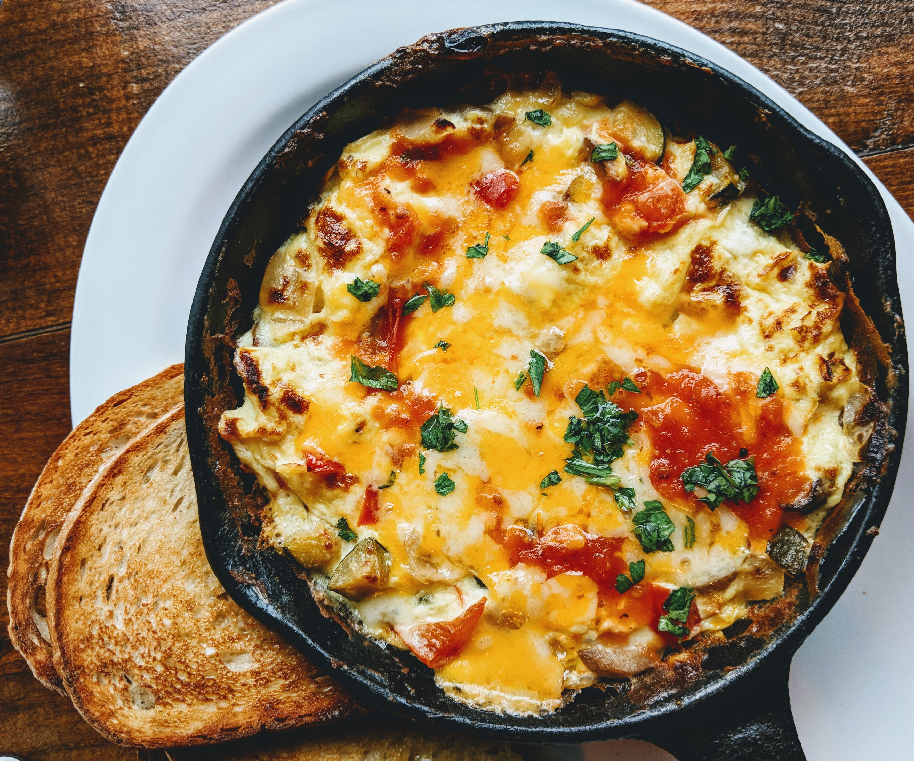

Super Cool Omelette Recipe (makes you buff)

Ingredients
- 2 large eggs
- 1 tablespoon unsalted butter
- 2 tablespoons grated cheese, any kind
- 3 to 4 cherry tomatoes, cut in half and sprinkled lightly with salt
- 2 tablespoons chopped basil, parsley, or herb of your choice
Instructions
- Beat the eggs: Use two or three eggs per omelette, depending on how hungry you are. Beat the eggs lightly with a fork.
- Melt the butter: Use an 8-inch nonstick skillet for a 2-egg omelette, a 9-inch skillet for 3 eggs. Melt the butter over medium-low heat, and keep the temperature low and slow when cooking the eggs so the bottom doesn’t get too brown or overcooked.
- Add the eggs: Let the eggs sit for a minute, then use a heatproof silicone spatula to gently lift the cooked eggs from the edges of the pan. Tilt the pan to allow the uncooked eggs to flow to the edge of the pan.
- Fill the omelette: Add the filling—but don’t overstuff the omelette—when the eggs begin to set. Cook for a few more seconds
- Fold and serve: Fold the omelette in half. Slide it onto a plate with the help of a silicone spatula.